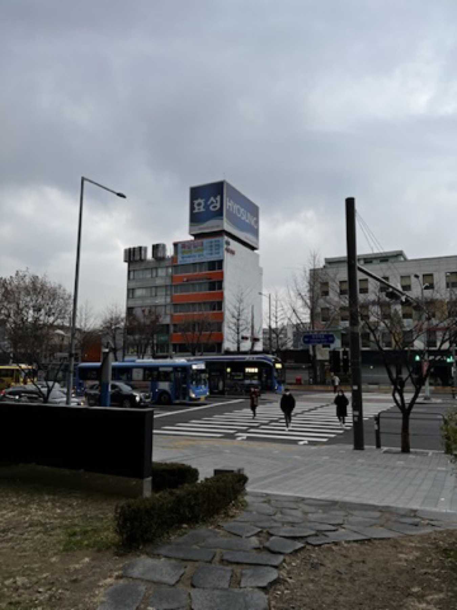
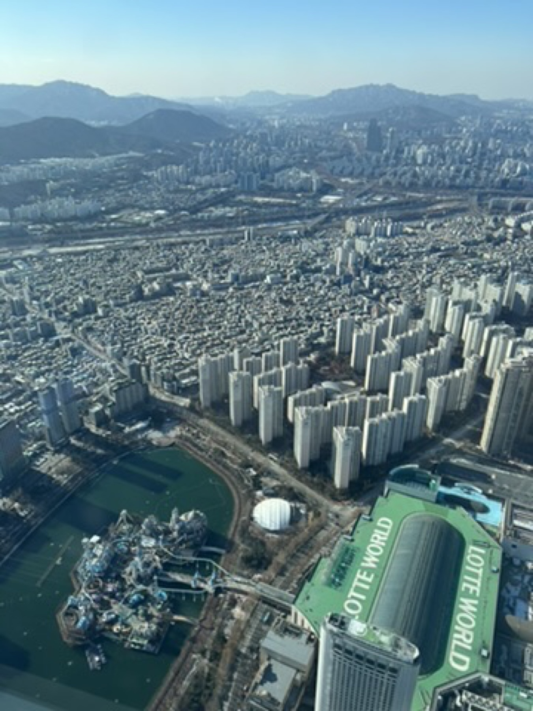
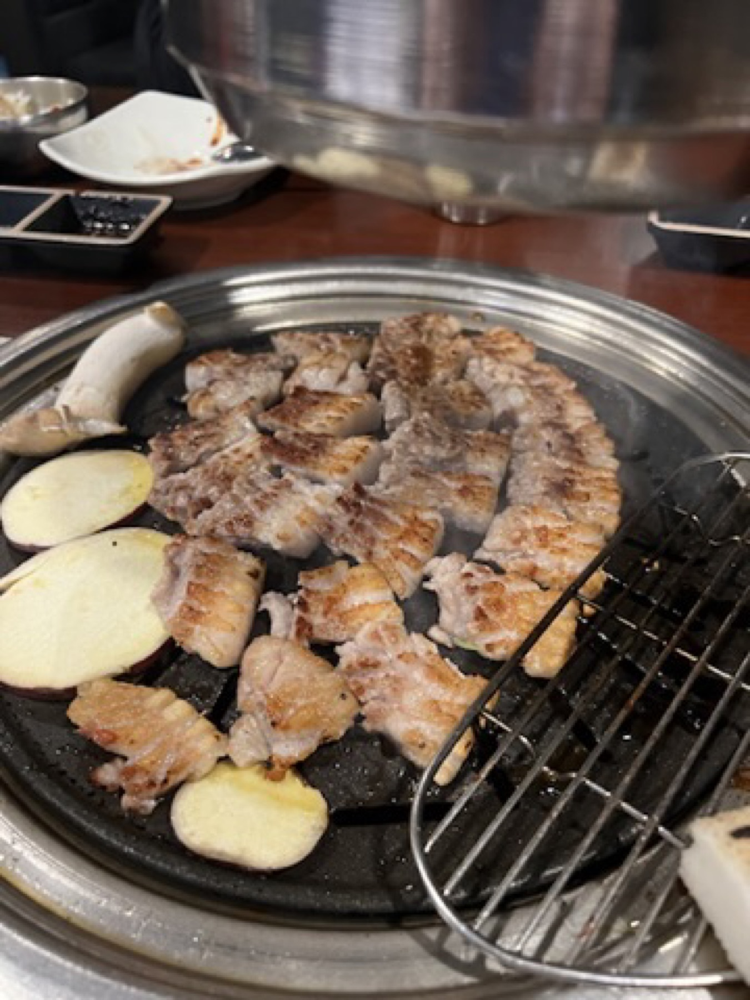

Best for
Readers who want a Seoul chapter that balances city scale with warm, slower stops.
South Korea / Seoul / Dec 2022
Seoul carried the start and the end of the route: more structured than Busan, more vertical, and best remembered through cold city light, quiet pauses, Korean barbecue, and the final view from above.
This public version keeps the Seoul story place-led. Some personal photos are intentionally excluded, so the page focuses on the city texture that still works without exposing companions.

Seoul felt more like a frame than a single uninterrupted chapter.
It opened the trip with winter streets and a measured city mood, then came back later with cafes, food, larger interiors, and the kind of skyline view that makes a city feel properly finished.
The best way to use this page is not as a full Seoul guide. It is a privacy-clean reference for the pieces that shaped the trip: city scale, cafe texture, barbecue warmth, and a final view.
Seoul, in moments
A short visual route through the public-safe Seoul photos: street mood, city scale, barbecue warmth, and the final view.

First lookWide roads, cold light, and the measured first mood of the city.

City scaleThe city felt more understandable once the grid opened up.

Food noteA simple table moment that made the cold city days feel easier.
Final view
The closing city image that made Seoul feel properly complete.
Seoul worked best when it was allowed to be both practical and atmospheric: city structure first, then food, cafes, and a final skyline to soften the edges.
Seoul chapter feeling
First Seoul Impression
The first Seoul mood was not dramatic in a postcard way. It was colder, wider, and more structured. That actually helped the route, because Seoul felt like a stable frame before the trip moved into the warmer, more relaxed Busan chapter.
City Texture
The older Seoul corners were part of the trip, but most of the strongest photos from those stops include identifiable people. For the public page, I am keeping this section lighter and using it as context rather than forcing unsafe images into the story.
This is still useful as a planning note: Seoul was not only malls and skyline views. The quieter streets and cafe pauses helped break up the city scale, especially in winter when moving indoors and outdoors needs a bit more rhythm.
Reader note: build in slow cafe time if you are doing Seoul in cold weather. It gives the city more texture and makes the bigger sightseeing blocks easier to enjoy.
Food Note / Seoul
The barbecue table is the clearest food memory I can safely show from Seoul right now. I am not turning it into a full review because the restaurant details and full verdict still need memory support, but as a city-chapter moment it works.
Skyline Finish
The skyline stop gave the Seoul chapter its clean ending. After winter streets, indoor pauses, and food, the city finally felt large in a way that was easy to understand visually.
Best for
Readers who want a Seoul chapter that balances city scale with warm, slower stops.
Still missing
More restaurant names, cafe names, and personal verdict notes before this becomes a deeper Seoul guide.